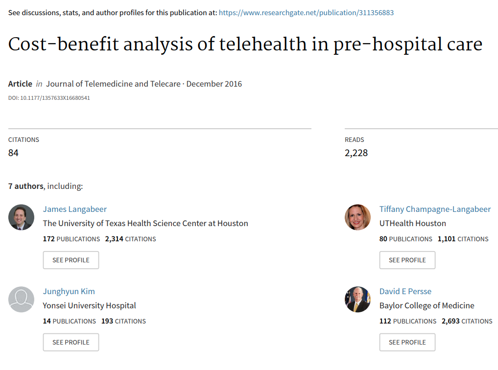
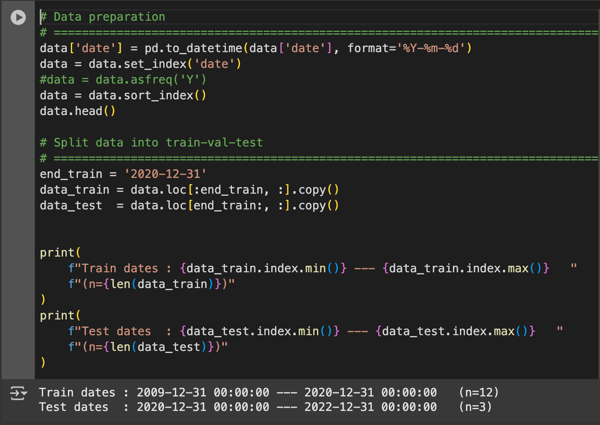
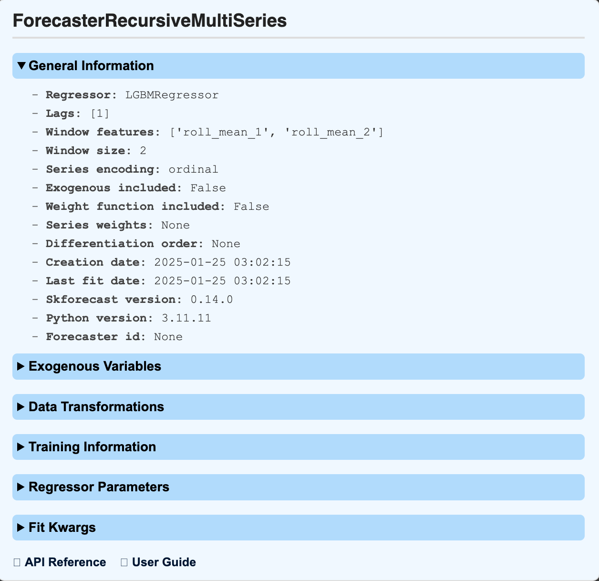

Telehealth Care Cost Savings Model: Part One
Model Overview
Reducing health-related costs is one way to improve individual life expectancy in the U.S. From a few studies:
The study, “Cost Benefit Analysis of telehealth in pre-hospital care”, (conducted in Houston, Texas, 2016), evaluates the cost savings of a telehealth care system (ETHAN) to redirect eligible patients to less cost-intensive services; such as from ambulances to taxis and emergency departments (ED) to urgent cares. [2]
To identify potential cost savings of “pre-hospital telehealth programs”, I designed and implemented a Telehealth Cost Savings Model using formulaic cost savings from the 2016 study: “Cost Benefit Analysis of telehealth in pre-hospital care”. Model results indicate immense 2024 state-level cost savings: ranging from 2.48% to 16.22% (as a percentage of annual health and hospital expenditure); emphasizing the immense [potential] cost savings of deploying similar programs within the United States.
Methodology
A. Model Inputs
To simulate the 2024 cost savings, across thirty-one states in the U.S., the model utilizes the following inputs:
The model calculates total patient and provider savings across select states in the U.S., combining these values to provide total community savings.
B. Patient Savings
The model determined total patient savings using 2021 PCRED costs and the total ED visits per state in 2021. Missing Nevada ED visit data was estimated using dependent multi-series—or multivariate—forecasting in Python.
Bi. Multiseries recursive forecasting is used to capture underlying trends impacting state ED visits. The eleven-year ED visit data is then split between "test" and "training" evaluation sets (Figure 2).
Figure 2
The recursive method "LightGBM" is used to train the model. A lag of 1 ensures the model uses the most recent year's predicted values, as inputs for the following year; ensuring the model is able to capture “short-term” trends including changes to insurance provider policies, federal healthcare spending, and health outbreaks (such as Covid19). “Shorter” rolling window features ensure the model does not “smooth out” short-term, year-over-year fluctuations (Figure 3).
Figure 3
The model yields 985,809 ED visits for Nevada in 2021, with a 95% confidence that the true value lies between 849,600 and 1,022,703.
The model yields 985,809 predicted emergency visits for Nevada in 2021 with a 95% confidence that the true emergency department visits lie between 849,600 and 1,022,703.
C. Provider Savings
Provider savings was calculated from the study's $103 per visit cost-savings. The model determines the predicted cost savings across the thirty-one selected states, using the real price parity index (RPP) with the state of Texas acting as a base. State ED visits are then used to determine 2021 state-level provider savings, which is then forecasted to “2024 savings” using the compounded annual healthcare inflation rate, from 2022 to 2024.
D. Combined Cost Savings is calculated as the sum of patient and provider cost savings across each state (Figure 4).
Figure 4
(1)Total “ED visits” was sourced from the Healthcare Utilization’s State Emergency Department Database (SEDD) database–which is sponsored by the federal department Agency for Healthcare Research and Quality (AHRQ).
Graphic: Deepai.org